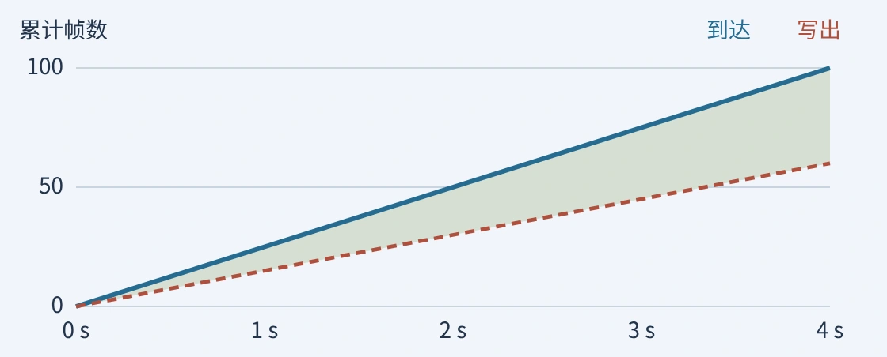

序言
相机拍到一帧图像时，磁盘上的视频文件往往还没有这一帧。程序可能先把图像放入队列，交给另一个线程压缩和写盘。点击停止的那一刻，未完成的工作需要有人接手。
采集、编码和观看是三件事
采集端尽量按设备节奏取得图像，编码端负责将较大的像素数组压缩成 JPEG 等格式，存储端负责保存。它们可以在不同线程中运行。队列是交接处，生产者把待处理帧放进去，消费者取出下一帧。短时写盘抖动时，这层缓冲能让采集暂时继续。
一帧通常有至少三个时刻：传感器采到它、应用把它放进队列、写入线程处理完它。想判断设备掉帧，看前两者之间有没有序号或时间断点；想判断编码落后，比较入队与出队的累计计数。只看成片播放时长没法区分这两类问题。
实时预览和留档录像的需求不同。预览会更在意“眼下看到什么”，丢一张过时画面可能比累积几秒延迟更合适。录像则可能需要保留每一帧。先确定各自允许丢什么，再决定是否共用队列。把浏览器窗口关掉也不应该隐式解释为“结束本地会话”，除非产品本就是这样约定的。

四秒会积压多少帧
设相机每秒稳定产生 25 帧，编码与写盘合起来每秒处理 15 帧，一开始队列为空。忽略首末帧在一秒内的微小时序，在四秒内送入约 100 帧，处理约 60 帧，剩余约 40 帧。停止采集后，按相同速度还需要约 2.7 秒才能消化完这段积压。
把写盘速度调到每秒 30 帧，持续处理能力超过输入，这个简化模型中就不会形成持续增长的积压。快的消费者在没有待处理帧时应当等待，不能算出负数队列。现实中还有波动、内存和队列容量上限，平均速度足够也可能出现短时排队。
如果录像要求连续，持续积压时不能只靠加长队列解决。可以降低采样率或分辨率，提升编码吞吐，也可以明确记录降采样策略。记录“采到多少、入队多少、成功写入多少”三组计数，才容易看出帧在什么位置丢失。
在容量有限的版本里，满了以后必须有明确选择。阻塞采集可能让设备缓冲区承担压力；丢最旧帧能控制预览延迟，却会给录像时间线留下缺口。把策略、丢弃数量和对应的采集时间写进会话记录，回看时才不会把剪断的运动当作瞬时跳变。
相机每秒产生 25 帧，连续录制 4 秒。假设开始时队列为空、容量足够，忽略单帧处理耗时波动。

每秒能写 15 帧，4 秒共收到 100 帧，写出 60 帧，仍有 40 帧等待。
文件能播放，不代表时间线正确
逐张保存 JPEG 后，FFmpeg 可以按指定输入帧率读取序列，编码成 MP4。假设有 50 张图，以每秒 5 帧输入，播放时长约为 10 秒。如果现场在 2 秒内拍完了这 50 张，视频就被放慢了五倍。想测量事件间隔，需要采集时间戳或正确生成的可变帧率时间线。
在输出端可以先写临时文件名。等编码器完成、退出状态和输出检查都满足约定后，再把它改名为最终文件。这样列表里的完整录像和仍在生成的文件容易区分。中途失败时留下原始帧，复盘仍有依据。
停止记录时的三次交接
先停止接收这次会话的新帧，再等待已经入队的工作完成，最后结束编码并发布最终文件。另起一轮录像时给它独立会话标识。否则上一次延迟写入的几帧可能混到新视频开头。清理磁盘也应保护排队和收尾中的目录，直到最后一个写入者释放它。
离线检查可以只用带有递增帧号的合成图。模拟写盘变慢，在最后一个编号之前点击停止，然后核对视频末帧、记录的总数和会话编号。再人为让一次编码失败，确认原始证据仍可读、新会话仍能独立开始。